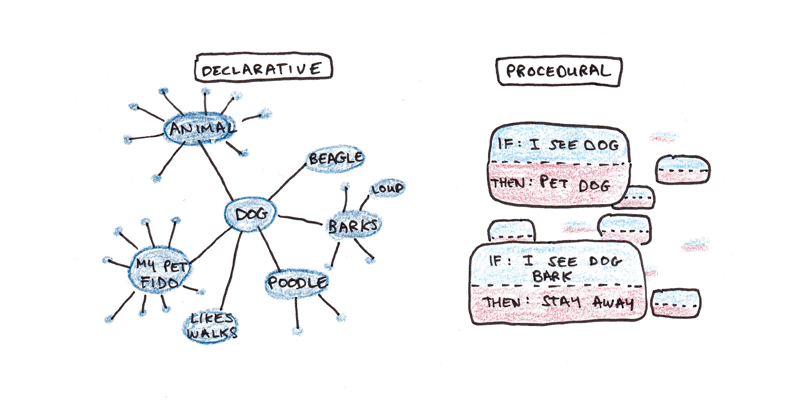

Wie Menschen lernen
Cognitive effort isn’t a bug—it’s the feature
18 August, 2025
KI kann uns produktiver machen
- Wichtige Erkenntnisse aus der Forschung:
- Dell’Acqua et al. (2023) erforschen die Möglichkeiten, mit KI-Unterstützung kognitive Aufgaben zu verbessern. Fazit: KI kann Produktivität und Qualität steigern, aber auch neue Herausforderungen ergeben.
- Toner-Rodgers (2025) diskutiert die Implikationen von KI für die Forschung und betont die Balance zwischen menschlicher und maschineller Intelligenz.
- Cui et al. (2024) analysieren die Auswirkungen von generativer KI auf Software Engineering und hebt sowohl Chancen als auch Herausforderungen hervor.
- Erkenntnisse:
- Automatisierung von routinemässigen kognitiven Aufgaben ist möglich
- Unterstützung kreativer Arbeit ist möglich
- Deskilling: Gefahr, bei ständiger KI-Unterstützung eigene Fähigkeiten zu verlieren
- Ohne Training: KI-Tools werden oft für ungeeignete Aufgaben eingesetzt
Aber halt…
ü§î
Sollten Lernende überhaupt produktiver sein?
Was ist, wenn Anstrengung der Punkt ist, nicht das Ergebnis?
Experten vs. Anfänger
Zwei verschiedene Betriebssysteme
| Dimension | üéØ Experten | üó∫Ô∏è Anf√§nger |
|---|---|---|
| Sehen | • Bedeutungsvolle Muster (Chunks) | • Einzelne Teile |
| Verarbeiten | • Automatische Prozeduren • Vorwärtsverkettung • Unbewusst |
• Schritt-für-Schritt-Denken • Rückwärtsverkettung • Bewusste Anstrengung |
| Gedächtnis | • bedeutungsvolle Chunks • Prozedural (“Ich weiss wie”) |
• separate Fakten • Deklarativ (“Ich weiss dass”) |
| Neural | • Myelinisierte neuronale Bahnen • Viele Stunden geübt |
• Schwache Verbindungen • Bahnen noch im Aufbau |
Experten haben die neuronale Architektur, die Anfänger erst entwickeln müssen
Warum existieren Schulen?
Wir unterscheiden zwischen:
Biologisch primärem Wissen:
- Wofür wir evolutionär angepasst sind
- Lernen geschieht mühelos und automatisch
- Beispiele: Sprechen lernen, Gesichter erkennen, soziale Interaktion
Biologisch sekundärem Wissen:
- Kulturelle Errungenschaften ohne evolutionäre Anpassung
- Erfordert bewusste Anstrengung und Instruktion
- Beispiele: Lesen, Schreiben, Mathematik, Programmieren
Primäres Wissen kann durch natürliche Entdeckung (discovery) erlernt werden, während akademische Fähigkeiten explizite Anleitung und strukturiertes Üben erfordern.
Wie Expertise entwickelt wird
| Gedächtnissystem | Beschreibung | Eigenschaften | Beispiel |
|---|---|---|---|
| Declaratives Gedächtnis | “Wissen dass” | • Fakten, Regeln • Bewusst, langsamer und angstender Abruf |
“Um \(3x + 5 = 20\) zu lösen, \(5\) von beiden Seiten subtrahieren.” |
| Prozedurales Gedächtnis | “Wissen wie” | • Automatisierte “atomische” Gedankenschritte • Schnelle, mühelose Ausführung |
\(3x + 5 = 20\) sehen → direkt wissen, dass \(x = 5\). |
Die Entwicklung: Fakten → Tausende Übungszyklen → Automatische Prozeduren → Expertise
Warum Anstrengung wichtig ist: Üben stärkt die neuronalen Bahnen, die Expertise erzeugen

Abbildung von Scott H Young
Das Lernparadox: Gefühl ≠ Realität
| Situation | Wie es sich anfühlt | Was tatsächlich passiert | Der Trugschluss |
|---|---|---|---|
| Beim K√§mpfen mit einem Problem | ‚Ä¢ Frustration üò£ ‚Ä¢ ‚ÄúIch kann das nicht‚Äù ‚Ä¢ Langsamer Fortschritt ‚Ä¢ Unsicherheit |
‚Ä¢ Neue neuronale Verbindungen entstehen ‚Ä¢ Tiefes Verst√§ndnis bildet sich ‚Ä¢ Langzeitged√§chtnis wird aktiviert ‚Ä¢ Echtes Lernen ü߆ |
“Wenn es schwer ist, lerne ich nicht” ❌ |
| Beim Produzieren mit KI-Hilfe | ‚Ä¢ Erfolgsgef√ºhl üòä ‚Ä¢ ‚ÄúIch bin produktiv‚Äù ‚Ä¢ Schnelle Ergebnisse ‚Ä¢ Selbstvertrauen |
‚Ä¢ Oberfl√§chliche Verarbeitung ‚Ä¢ Keine neuen Verbindungen ‚Ä¢ Arbeitsged√§chtnis nur kurz aktiv ‚Ä¢ Illusion des Lernens üÉè |
“Wenn ich etwas produziere, lerne ich” ❌ |
Die gefährliche Umkehrung
Unser Gehirn belügt uns: Was sich wie Lernen anfühlt (mühelose Produktion) ist oft das Gegenteil von Lernen.
Die Wahrheit: Echter Lernfortschritt fühlt sich wie Scheitern an.
Merksatz: “Cognitive effort isn’t a bug—it’s the feature.”
Das Problem der kognitiven Auslagerung
Drei Wege, wie Lernen gestört wird:
| Problem | Mechanismus | Konsequenz der Auslagerung an KI |
|---|---|---|
| Keine Vorhersagefehler | Gehirn lernt aus Lücken zwischen “was ich erwarte” und “was passiert” | Eliminiert dies vollständig |
| Keine Gedächtnisbildung | Information, die nicht aktiv verarbeitet wird, wird nicht gespeichert | Liefert Antworten ohne Verarbeitung |
| Keine prozedurale Entwicklung | Expertise erfordert tausende “atomare Denkschritte” | Überspringt diesen Aufbauprozess |
Ergebnis: Die Auslagerung kognitiver Prozesse (cognitive offloading) kann zu oberflächlicher Verarbeitung ohne tiefes Verständnis und Abhängigkeit von Tools führen.
Das LERN-Protokoll
| üéØ Aktion | ⚡ Warum | üö´ Nicht | |
|---|---|---|---|
| Lass Schwierigkeit zu | Verwirrung aushalten | Anstrengung = neuronale Bahnen | Lösungen nachschlagen |
| Erlaube Fehler | Erst raten, dann prüfen | Vorhersagefehler = Lernsignal | Fehler vermeiden |
| Rufe aktiv ab | Ohne Notizen erklären | Generierung > Erkennung | Passiv lesen |
| Nutze Abstände | Nach Tagen wiederholen | Vergessen + Neulernen = Behalten | Massiert üben |
Die 85%-Regel
Ziel: ~85% Erfolg (nicht 95%+ oder <70%)
Jeder leichte Weg = eine verpasste Lernchance
Von Claude generiert.
Bibliographie

Berner Fachhochschule | Bern University of Applied Sciences